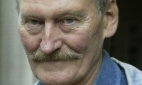

Gustav Christian Adolf Ramfjord
M, #17701, f. 11 juni 1858, d. 20 november 1934
Foreldre
Biografi
Gustav Christian Adolf Ramfjord ble født den 11 juni 1858 på/i Stein, Nærøy, Nord-Trøndelag. Han giftet seg med
Beret Olsdatter Lundemo i 1887. Han døde den 20 november 1934 på/i Trondheim, Sør-Trøndelag. Han ble gravlagt den 13 mai 1935 på/i Tilfredshet kapell, Øya; Elgeseter, Trondheim, Sør-Trøndelag.
Gustav Christian Adolf Ramfjord ble døpt den 18 juli 1858 på/i Nærøy, Nord-Trøndelag. Han bodde på/i Trondheim, Sør-Trøndelag.
| Sist redigert |
14 mars 2022 00:00:00 |
| Slektskap | 5-menning 3 ganger forskjøvet til Håkon Wahl |
Beret Olsdatter Lundemo
K, #17702, f. 15 juni 1861, d. 11 februar 1951
Foreldre
Biografi
Beret Olsdatter Lundemo ble født den 15 juni 1861 på/i Horge, Melhus, Sør-Trøndelag. Hun giftet seg med
Gustav Christian Adolf Ramfjord i 1887. Hun døde den 11 februar 1951 på/i Trondheim, Sør-Trøndelag.
Beret Olsdatter Lundemo was also known as Beret Ramfjord. Hun ble døpt den 4 august 1861 på/i Horge, Melhus, Sør-Trøndelag.
| Sist redigert |
14 mars 2022 00:00:00 |
Emma Gustavsdatter Ramfjord
K, #17703, f. 4 august 1890, d. 31 mai 1979
Foreldre
Biografi
Emma Gustavsdatter Ramfjord ble født den 4 august 1890 på/i Trondheim, Sør-Trøndelag. Hun giftet seg med
Ole Elias Karlsen Myklebust den 4 juli 1914 på/i Trondheim, Sør-Trøndelag. Hun døde den 31 mai 1979 på/i Trondheim, Sør-Trøndelag. Hun ble gravlagt den 9 juli 1979 på/i Tilfredshet kirkegård, Øya; Elgeseter, Trondheim, Sør-Trøndelag.
Emma Gustavsdatter Ramfjord was also known as Emma Myklebust.
| Sist redigert |
3 april 2011 00:00:00 |
| Slektskap | 6-menning 2 ganger forskjøvet til Håkon Wahl |
Ole Elias Karlsen Myklebust
M, #17704, f. 19 september 1885, d. 8 september 1945
Foreldre
Biografi
Ole Elias Karlsen Myklebust ble født den 19 september 1885 på/i Harøy, Sandøy, Møre og Romsdal. Han giftet seg med
Emma Gustavsdatter Ramfjord den 4 juli 1914 på/i Trondheim, Sør-Trøndelag. Han døde den 8 september 1945 på/i Trondheim, Sør-Trøndelag. Han ble gravlagt på/i Tilfredshet kirkegård, Øya; Elgeseter, Trondheim, Sør-Trøndelag.
| Sist redigert |
3 april 2011 00:00:00 |
Karl Johan Myklebust
M, #17705, f. før 1865
Biografi
Karl Johan Myklebust ble født før 1865 på/i Harøy, Sandøy, Møre og Romsdal. Han giftet seg med
Kristofa Knutsdotter. Han døde på/i Harøy, Sandøy, Møre og Romsdal.
| Sist redigert |
28 februar 2013 00:00:00 |
Kristofa Knutsdotter
K, #17706, f. før 1865
Biografi
Kristofa Knutsdotter ble født før 1865. Hun giftet seg med
Karl Johan Myklebust. Hun døde på/i Harøy, Sandøy, Møre og Romsdal.
Kristofa Knutsdotter was also known as Kristofa Myklebust.
| Sist redigert |
28 februar 2013 00:00:00 |
Agnar Mykle
M, #17707, f. 8 august 1915, d. 14 januar 1994
Foreldre
Familie 1: Ruth Huse (f. 30 desember 1907, d. 20 juni 1988)
| Datter | Mette Mykle+ |
| Datter | Moa Mykle |
Biografi
Agnar Mykle tok artium i 1935 på/i Trondheim, Sør-Trøndelag.
| Sist redigert |
28 februar 2013 00:00:00 |
| Slektskap | 7-menning 1 gang forskjøvet til Håkon Wahl |
Kirsten Myklebust
K, #17708, f. 17 februar 1917
Foreldre
Biografi
Kirsten Myklebust ble født den 17 februar 1917 på/i Trondheim, Sør-Trøndelag. Hun giftet seg med
Terje Horsberg.
Kirsten Myklebust was also known as Sissi Myklebust. Hun was also known as Kirsten Horsberg. Hun bodde på/i Mosjøen, Vefsn, Nordland.
| Sist redigert |
21 august 2015 00:00:00 |
| Slektskap | 7-menning 1 gang forskjøvet til Håkon Wahl |
Kjell Myklebust
M, #17709, f. 29 september 1925, d. oktober 1948
Foreldre
Biografi
Kjell Myklebust ble født den 29 september 1925 på/i Trondheim, Sør-Trøndelag. Han døde i oktober 1948 på/i Trondheim, Sør-Trøndelag. Han ble gravlagt den 8 november 1948 på/i Tilfredshet kirkegård, Øya; Elgeseter, Trondheim, Sør-Trøndelag.
Kjell Myklebust ble døpt den 25 oktober 1925 på/i Nidarosdomen, Trondheim, Sør-Trøndelag.
| Sist redigert |
28 februar 2013 00:00:00 |
| Slektskap | 7-menning 1 gang forskjøvet til Håkon Wahl |
Ruth Sivertsen
K, #17710, f. 23 desember 1913, d. 12 juli 1990
Foreldre
Familie: Agnar Mykle (f. 8 august 1915, d. 14 januar 1994)
Biografi
Ruth Sivertsen ble født den 23 desember 1913 på/i Kirkenes, Sør-Varanger, Finnmark. Hun giftet seg med
Agnar Mykle den 17 mars 1937 på/i Kirkenes, Sør-Varanger, Finnmark.
Agnar Mykle og hun ble skilt. Hun døde den 12 juli 1990 på/i Eidsvoll, Akershus. Hun ble gravlagt på/i Kirkenes nye gravsted, Sør-Varanger, Finnmark.
Ruth Sivertsen was also known as Ruth Benzen. Hun was also known as Ruth Myklebust.
| Sist redigert |
3 april 2011 00:00:00 |
Arne Bust Mykle
M, #17712, f. 9 mai 1937, d. 13 oktober 2015
Foreldre
Familie: Bjørg
| Sønn | Martin Mykle (f. 17 mars 1969, d. 23 februar 2009) |
| Sønn | Jørgen Mykle (f. 18 mars 1971, d. 20 juni 2005) |
| Datter | Kari Mykle+ |

Arne Bust Mykle
Biografi
Arne Bust Mykle ble født den 9 mai 1937 på/i Kirkenes, Sør-Varanger, Finnmark. Han giftet seg med Bjørg. Han døde den 13 oktober 2015.
Arne Bust Mykle bodde på/i Darbu, Øvre Eiker, Buskerud.
| Sist redigert |
14 oktober 2015 00:00:00 |
| Slektskap | 8-menning til Håkon Wahl |
Axeliane Christine Zetlitz Kielland Holm
K, #17713, f. 13 februar 1916, d. 17 juni 1995
Foreldre
Familie: Agnar Mykle (f. 8 august 1915, d. 14 januar 1994)
| Datter | Mette Mykle+ |
| Datter | Moa Mykle |
Biografi
Axeliane Christine Zetlitz Kielland Holm ble født den 13 februar 1916 på/i Bergen, Hordaland. Hun giftet seg med
Agnar Mykle i 1941.
Agnar Mykle og hun ble skilt i 1957. Hun døde den 17 juni 1995 på/i Asker, Akershus.
Axeliane Christine Zetlitz Kielland Holm was also known as Jane Holm. Hun was also known as Axeliane Christine Zetlitz Kielland Mykle.
| Sist redigert |
30 mars 2011 00:00:00 |
Ingebrigt Christiansen Vold
M, #17715, f. før 1819
Biografi
Ingebrigt Christiansen Vold ble født før 1819 på/i Strinda, Trondheim, Sør-Trøndelag.
| Sist redigert |
28 februar 2013 00:00:00 |
Johan Adolf Nikolaisen Moen
M, #17716, f. 26 april 1862, d. 30 mai 1942
Foreldre
Biografi
Johan Adolf Nikolaisen Moen ble født den 26 april 1862 på/i Kil; Gravvik, Nærøy, Nord-Trøndelag. Han giftet seg med
Jette Kristine Kristiansdatter Rotvik den 24 januar 1897. Han døde den 30 mai 1942 på/i Kjelmoen, Nærøy, Nord-Trøndelag.
| Sist redigert |
28 februar 2013 00:00:00 |
| Slektskap | 3-menning 3 ganger forskjøvet til Håkon Wahl |
Dine Kristine Fredrikke Evensen
K, #17717, f. 9 september 1860, d. 2 oktober 1940
Foreldre
Biografi
Dine Kristine Fredrikke Evensen ble født den 9 september 1860 på/i Foldereid, Nærøy, Nord-Trøndelag. Hun døde den 2 oktober 1940. Hun ble gravlagt den 10 oktober 1940 på/i Kolvereid kirkegård, Nærøy, Nord-Trøndelag.
| Sist redigert |
5 desember 2010 00:00:00 |
| Slektskap | 4-menning 3 ganger forskjøvet til Håkon Wahl |
Håkon Hanssen Schjelderup
M, #17718, f. 26 mars 1900, d. 1 juli 1984
Foreldre
Biografi
Håkon Hanssen Schjelderup ble født den 26 mars 1900 på/i Tømmervikenget, Nærøy, Nord-Trøndelag. Han giftet seg med
Sofie Antonsdatter Sandnesaunet i 1924. Han døde den 1 juli 1984 på/i Kolvereid, Nærøy, Nord-Trøndelag. Han ble gravlagt den 7 juli 1984 på/i Kolvereid kirkegård, Nærøy, Nord-Trøndelag.
Håkon Hanssen Schjelderup eide Åneset 25/26, Kolvereid, Nærøy, Nord-Trøndelag.
| Sist redigert |
28 februar 2013 00:00:00 |
| Slektskap | 4-menning 1 gang forskjøvet til Håkon Wahl |
Sofie Antonsdatter Sandnesaunet
K, #17719, f. 5 oktober 1903, d. 25 april 1957
Foreldre
Biografi
Sofie Antonsdatter Sandnesaunet ble født den 5 oktober 1903 på/i Sandnesaunet austre 7/1, Sandnesaunet, Nærøy, Nord-Trøndelag. Hun giftet seg med
Håkon Hanssen Schjelderup i 1924. Hun døde den 25 april 1957 på/i Åneset, Nærøy, Nord-Trøndelag. Hun ble gravlagt den 2 mai 1957 på/i Kolvereid kirkegård, Nærøy, Nord-Trøndelag.
Sofie Antonsdatter Sandnesaunet was also known as Sofie Schjelderup.
| Sist redigert |
28 februar 2013 00:00:00 |
| Slektskap | 6-menning 2 ganger forskjøvet til Håkon Wahl |
Jacob Andreas Johannessen
M, #17720, f. 29 september 1848, d. 28 januar 1940
Foreldre
Biografi
Jacob Andreas Johannessen ble født den 29 september 1848 på/i Sandnes, Nærøy, Nord-Trøndelag. Han giftet seg med
Ingeborg Katrine Eliasdatter Øset den 6 november 1871. Han døde den 28 januar 1940 på/i Sandnesenget, Sandnes, Nærøy, Nord-Trøndelag.
| Sist redigert |
27 juni 2015 00:00:00 |
| Slektskap | 15-menning 3 ganger forskjøvet til Håkon Wahl |
Ingeborg Katrine Eliasdatter Øset
K, #17721, f. 12 august 1849, d. 27 april 1940
Foreldre
Biografi
Ingeborg Katrine Eliasdatter Øset ble født den 12 august 1849 på/i Salsnes, Fosnes, Nord-Trøndelag. Hun giftet seg med
Jacob Andreas Johannessen den 6 november 1871. Hun døde den 27 april 1940 på/i Sandnesenget, Sandnes, Nærøy, Nord-Trøndelag.
Ingeborg Katrine Eliasdatter Øset was also known as Ingeborg Katrine Johannessen. Hun ble døpt den 23 september 1849 på/i Fosnes, Nord-Trøndelag.
| Sist redigert |
1 juni 2021 00:00:00 |
Elise Margrethe Jensdatter
K, #17722, f. 9 oktober 1867
Foreldre
Biografi
Elise Margrethe Jensdatter ble født den 9 oktober 1867 på/i Foldereid, Nord-Trøndelag.
Elise Margrethe Jensdatter ble døpt den 3 november 1867 på/i Foldereid, Nord-Trøndelag. Hun ble konfirmert den 22 juli 1883 på/i Kolvereid, Nord-Trøndelag.
| Sist redigert |
25 februar 2024 13:34:23 |
| Slektskap | 5-menning 3 ganger forskjøvet til Håkon Wahl |
Petra Bergitte Jensdatter
K, #17723, f. 2 mars 1864
Foreldre
Biografi
Petra Bergitte Jensdatter ble født den 2 mars 1864 på/i Nærøy, Nord-Trøndelag.
| Sist redigert |
1 mars 2013 00:00:00 |
| Slektskap | 5-menning 3 ganger forskjøvet til Håkon Wahl |
Harald Arktander Mohn
M, #17724, f. 11 august 1899, d. 15 februar 1973
Foreldre
| Sønn | Viggo Mohn+ (f. 20 juni 1942, d. 28 desember 2022) |
| Sønn | Jan Frode Mohn+ |
| Sønn | Harry Mohn |
Biografi
Harald Arktander Mohn ble født den 11 august 1899 på/i Varøya, Nærøy, Nord-Trøndelag. Han giftet seg med
Hjørdis Pauline Halvorsen i 1941. Han døde den 15 februar 1973. Han ble gravlagt på/i Lundring kirkegård, Nærøy, Nord-Trøndelag.
| Sist redigert |
1 mars 2013 00:00:00 |
| Slektskap | 6-menning 2 ganger forskjøvet til Håkon Wahl |
Hjørdis Pauline Halvorsen
K, #17725, f. 24 juni 1913, d. 15 november 2010
Foreldre
Familie: Harald Arktander Mohn (f. 11 august 1899, d. 15 februar 1973)
| Sønn | Viggo Mohn+ (f. 20 juni 1942, d. 28 desember 2022) |
| Sønn | Jan Frode Mohn+ |
| Sønn | Harry Mohn |
Biografi
Hjørdis Pauline Halvorsen ble født den 24 juni 1913 på/i Binnerøya 18/7, Storarnøya, Nærøy, Nord-Trøndelag. Hun giftet seg med
Harald Arktander Mohn i 1941. Hun døde den 15 november 2010 på/i Nærøy bo- og behandlingssenter, Kolvereid, Nærøy, Nord-Trøndelag. Hun ble gravlagt den 19 november 2010 på/i Lundring kirkegård, Nærøy, Nord-Trøndelag.
Hjørdis Pauline Halvorsen was also known as Hjørdis Pauline Mohn. Hun ble døpt den 2 november 1913 på/i Nærøy, Nord-Trøndelag.
| Sist redigert |
20 mai 2016 00:00:00 |
{kind=link}